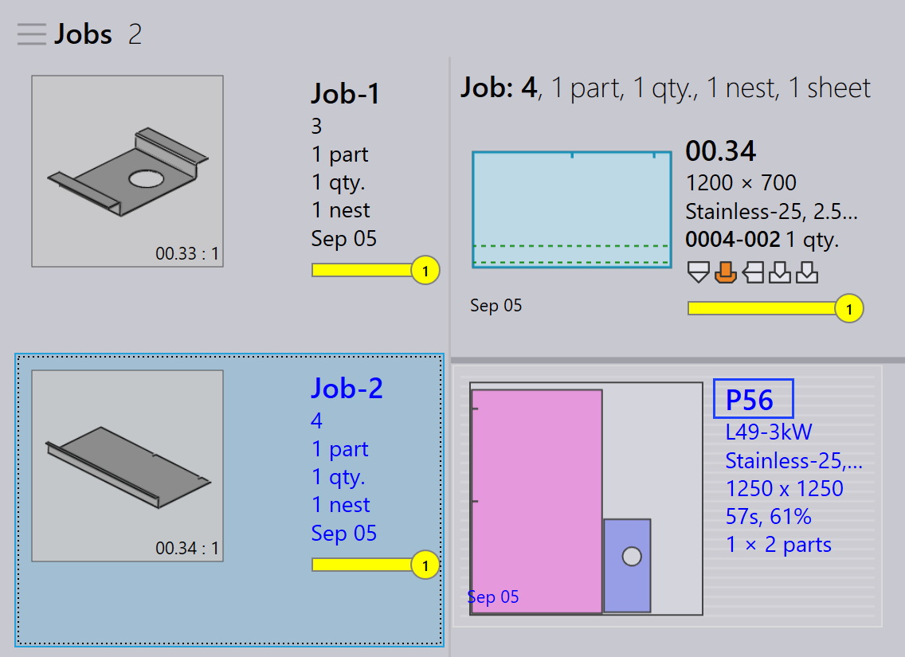

Repacking
TruSmartCAM does not have a separate Repacking module. Instead, repacking is handled through job-level options that give flexibility in how parts are combined.
There are three ways by which repacking can be done.
-
Repacking with Mix parts from multiple Jobs.
-
Manual Repacking Using Add Parts Interactive Wizard.
-
Manual Repacking Using TecZone.
Repacking with mix parts from multiple Jobs
-
To enable this option go to factory → settings → Job → Nest settings → Mix parts from multiple Jobs.

-
When enabled, this option allows parts from different jobs to be grouped together during auto nesting or interactive nesting, resulting in a combined packing or nesting.
-
For example:
-
Job-1 has 1 part, Job-2 has 1 part.
-
With Mix parts from multiple Jobs enabled, TruSmartCAM can repack these 2 parts into a single optimized nest.
-


-
Without this option, parts from each job remain separated during nesting/packing with different layout names.
-
Repacking can also be performed manually without enabling this option.
Manual repacking using add parts interactive wizard
-
From the layout view, select the parts you want to repack.
-
Right-click the part and choose Add Parts… from the layout panel.

-
Follow the prompts in the wizard to complete the repacking process.
-
Choose Show other job parts and add them to the current job.

-
Review the changes and confirm the repacking.

For more details see Add Parts.
Manual repacking using TecZone
-
Open the TecZone by clicking on
 .
.

-
In the TecZone interface, click on Add.

-
A new window appears where you can select the parts to be repacked. Click Show… and then select Other job parts. After making your selection, click Pick.

-
A new window appears where you can define, where the part needs to be repacked.

-
Click on Save changes to TruSmartCAM and the repacked layout will be available in TruSmartCAM.
